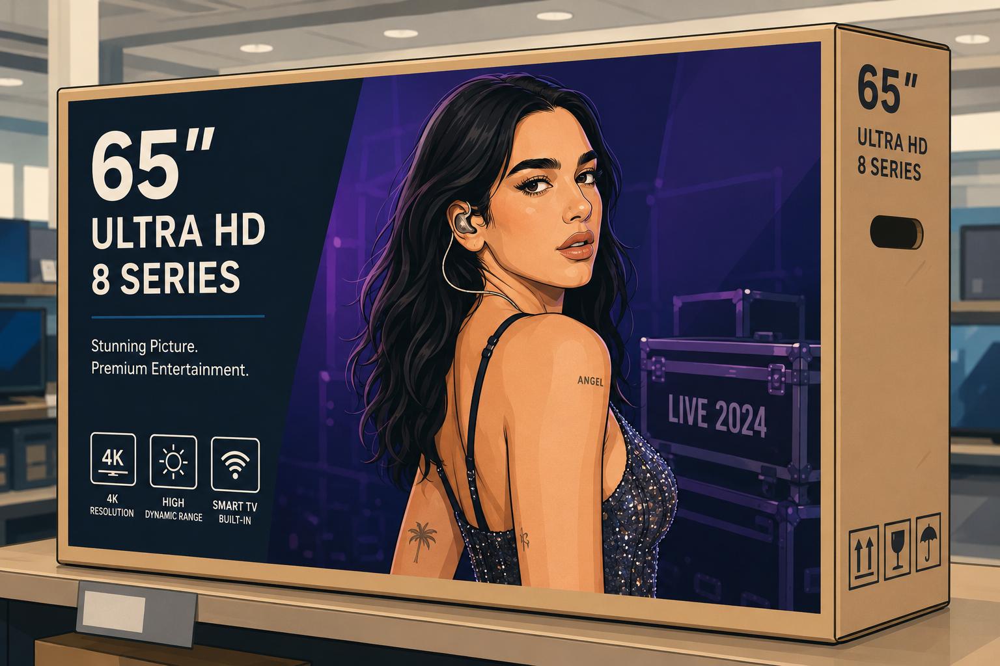

When “Cleared” Doesn’t Mean Cleared: Scope-of-License Risk and Vendor Reliance in Dua Lipa v. Samsung
Dua Lipa is suing Samsung for at least $15 million, alleging the company used a copyrighted photo of her on the front of its television boxes, without her permission.

The complaint, filed May 8, 2026 in the Central District of California (Lipa v. Samsung Electronics America, Inc., Case No. 2:26-cv-05019), alleges eight causes of action spanning copyright infringement, Lanham Act false endorsement, common law trademark infringement, and right of publicity claims under California Civil Code § 3344. The image at issue is a backstage photo from Austin City Limits 2024, registered with the U.S. Copyright Office (Registration No. VA 2-479-685) and owned by Lipa herself.
In statements provided to multiple outlets including CNN and Billboard, Samsung said the photo was provided by a content partner for Samsung TV Plus, its free streaming service, and that Samsung received “explicit assurance from the content partner that permission had been secured, including for the retail boxes.” Samsung has denied intentional misuse and said it remains open to a resolution.
Samsung’s defense, in other words, is not that it had an independent right to use the image, but that it relied on a partner’s representation that the rights had been obtained. That raises two interesting questions: (1) when does third-party reliance actually limit your legal exposure, and (2) how do you prevent an asset cleared for one context from drifting into a use it was never licensed for?
How content moves through modern marketing supply chains
Samsung’s statement that the image was “originally provided by a content partner” for Samsung TV Plus means the photo did not come directly from Lipa or her representatives to Samsung’s packaging team. Instead, it came through an intermediary, in a context (streaming content promotion) that is at least one step removed from physical retail packaging. How it got from one context to the other is a key question in this case.
That path from content partner to retail box also exposes a potential licensing issue. Licensing agreements typically define scope by medium, territory, duration, and use case. Thus, a right to use an image as promotional material for content available on Samsung TV Plus is not the same as a right to reproduce that image on a physical cardboard box sold at Best Buy or Target. And the legal exposure can add up fast, as a single image can trigger three separate legal regimes. Copyright, Lanham Act false endorsement, and right of publicity claims under California law. A clearance process designed to address one of these could still miss the others entirely.
Why “our partner said it was fine” has limits
Copyright is the most straightforward of Lipa’s claims. Copyright infringement is widely treated as a strict liability offense. If a plaintiff establishes ownership of the work and unauthorized copying, the defendant is liable regardless of intent. Although the innocent infringement provision in the Copyright Act (17 U.S.C. § 504(c)(2)) can reduce the floor on statutory damages if the defendant proves it had no reason to know its conduct was infringing, it does not eliminate liability itself. So even if Samsung genuinely believed it had permission because a content partner said so, that belief would not give Samsung a defense on the question of whether infringement occurred.
The false endorsement claim under Section 43(a) of the Lanham Act creates a different kind of exposure. False endorsement does not require proof that the defendant intended to mislead consumers. It requires proof that the use of a person’s identity in connection with a product is likely to cause confusion about whether that person sponsored or endorsed the product. In the Ninth Circuit, where Lipa’s case was filed, courts apply an eight-factor test adapted from Downing v. Abercrombie & Fitch, 265 F.3d 994 (9th Cir. 2001). In Downing, Abercrombie purchased a photograph of well-known surfers from the photographer and used it in a catalog to promote surf-related apparel without the surfers’ consent. The Ninth Circuit reversed summary judgment for Abercrombie, finding genuine issues of material fact on likelihood of confusion, and rejected Abercrombie’s First Amendment defense because the use was primarily commercial in nature. As relevant here, Abercrombie had acquired the photo through a legitimate transaction with the photographer, yet that did not resolve the endorsement question, because purchasing a copyright license to an image is not the same as obtaining the depicted person’s consent to imply endorsement. Several of the Downing factors appear to favor Lipa at the pleading stage, including that the image is an actual photograph (not an illustration or lookalike), she is globally recognized, the complaint alleges social media evidence of consumer confusion, and the image appeared directly on a product sold at retail.
A right of publicity claim under California Civil Code § 3344 protects a person’s name, image, and likeness from unauthorized commercial use. The elements include a knowing use of the plaintiff’s identity for commercial purposes, without consent, that causes damage. The “knowing” element is one area where Samsung’s reliance on its content partner could matter, though courts have generally interpreted the requirement to mean that the defendant knew it was using the plaintiff’s identity, not that the defendant knew the use was unauthorized.
A vendor indemnification clause, if one exists between Samsung and its content partner, may shift the financial burden between those two parties after the fact. But indemnification would not prevent injunctive relief against Samsung, and it would not eliminate Samsung’s potential liability to Lipa. Samsung is the name on the box and it is the company selling the TVs inside it.
The complaint also alleges that Lipa’s team sent cease-and-desist demands beginning in June 2025 and that Samsung refused to stop selling the boxes, though Lipa did not file the suit until May 2026, nearly a year later. If the allegations are accurate, this post-notice conduct could undercut any argument that Samsung’s reliance on its partner was reasonable and ongoing, because at that point Samsung had been told directly by the rights holder that no authorization existed.
Building a rights process that can withstand scrutiny
For brands and in-house counsel, this case reinforces several practical points. Vendor assurances are not a substitute for independent rights verification, especially when the asset involves a celebrity likeness or third-party copyrighted material. A partner saying “it’s cleared” is only as useful as the specificity of what it was cleared for. Put differently, the question is not just “do we have a right to use this image” but “do we have a right to use this image on retail packaging, in this territory, for this product line, for this duration.” Organizations need internal workflows that flag when a creative asset is being moved from its original approved context into a new one, rather than assuming that because the asset exists in the company’s library, it is available for any purpose. The case also illustrates that speed and accuracy after notice matters. Sitting on a cease-and-desist demand while potentially infringing products continue to ship creates both legal exposure and reputational risk.
As brands operate across more surfaces, from streaming to digital to social to ecommerce to retail packaging, the gap between “we have an asset” and “we have the right to use this asset here” is only going to grow. The Lipa v. Samsung dispute is helpful to understanding how that gap could go unaddressed.
This content is for general informational purposes only and does not constitute legal advice. Legal matters are fact-specific, and consultation with qualified counsel is recommended for individual circumstances.